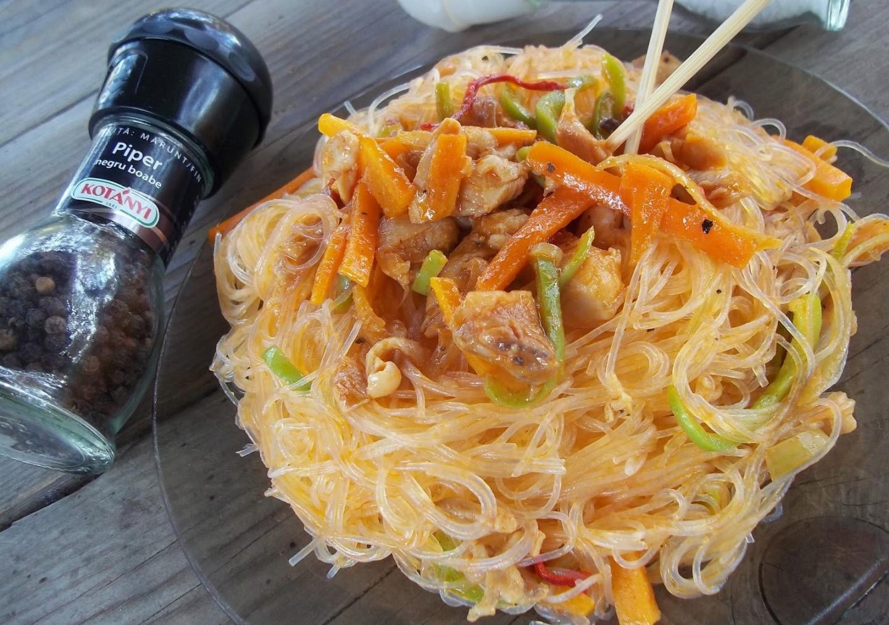
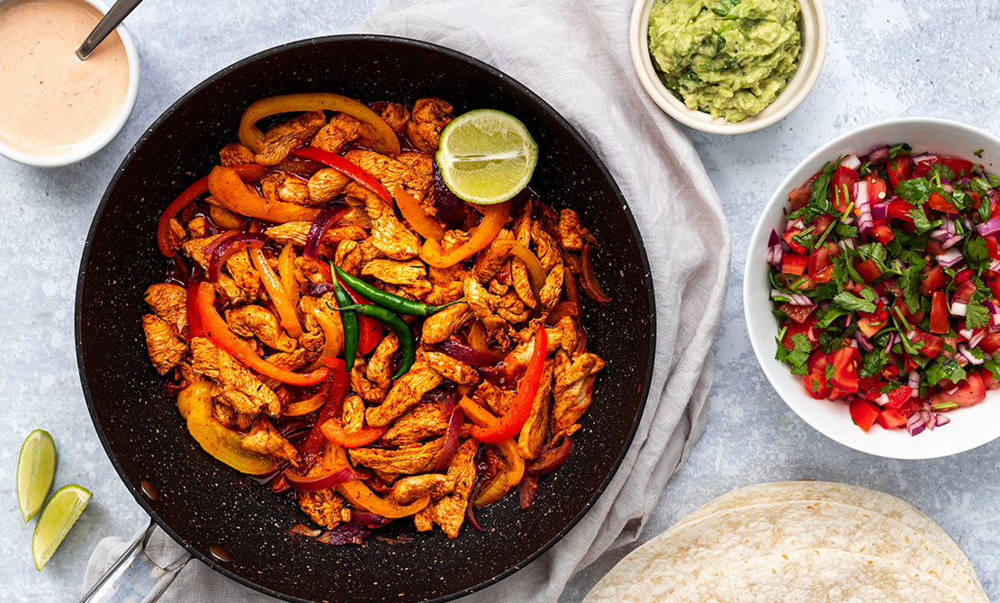
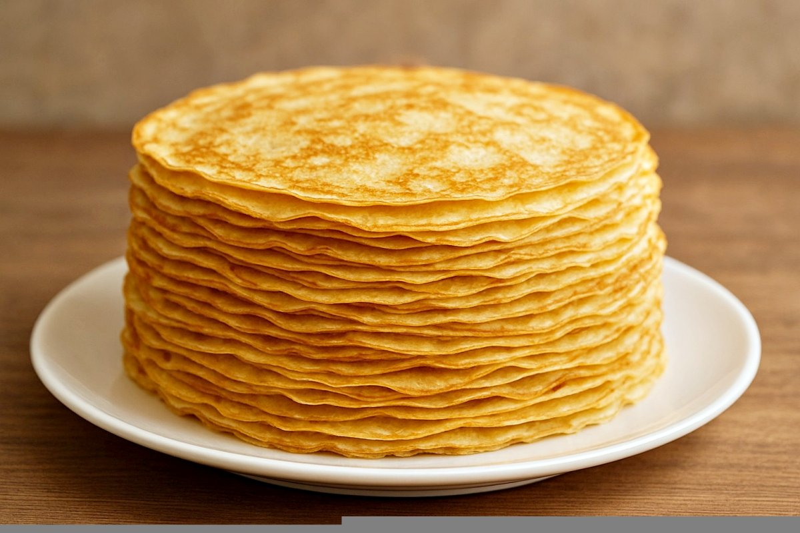
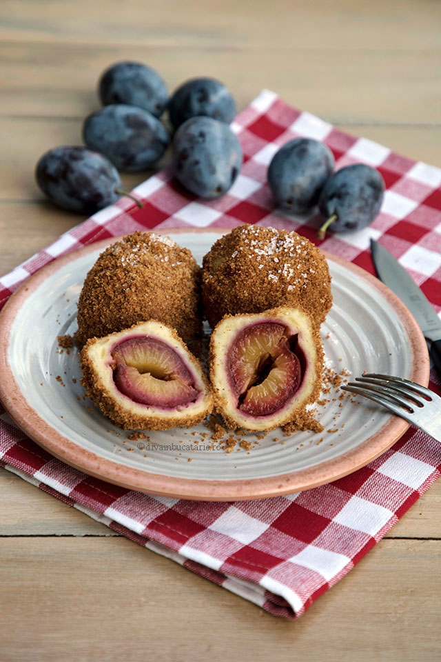

Pui, tăiței, legume, sos de soia

Ingrediente:
• piept de pui
• tăiței chinezești
• varză dulce
• morcov
• ardei gras
• ciuperci urechi de lemn (opțional)
• sos de soia
• sos Maggi
• dulceață de ardei iute (opțional)
• ulei de măsline
• sare și piper
• ou (opțional, pentru omletă)
Mod de preparare:
Pieptul de pui se taie mărunt și se marinează cu sos de soia, puțină sare, piper, sos Maggi și dulceață de ardei iute, apoi se lasă aproximativ 30 de minute.
Se gătește apoi în tigaie cu puțin ulei de măsline până este bine făcut.
Tăițeii se opăresc și se trag ușor la tigaie cu puțin ulei de măsline și sos de soia.
Legumele se taie (varza fideluță, morcovul și ardeiul bastonașe) și se gătesc separat, fiecare în tigaie, cu puțin ulei și sare.
După ce toate sunt gătite ușor, se pun împreună în tigaie și se adaugă carnea.
Se mai adaugă puțin sos de soia și sos Maggi pentru un plus de gust și consistență.
La final se adaugă tăițeii și se amestecă aproximativ un minut pe foc.
Servire:
Se poate adăuga deasupra omletă tăiată mărunt și se servește cald.
Pui, ardei, ceapă, condimente

Ingrediente:
• 500 g piept de pui
• 1 lingură boia dulce
• ½ lingură boia iute
• 1 lingură coriandru
• 2 căței de usturoi
• 4-5 linguri ulei de măsline
• 1 ceapă roșie
• 1 ardei kapia
• 1 ardei roșu iute (opțional)
• sare și piper
• porumb dulce (opțional)
• ceapă verde (opțional)
Mod de preparare:
Se pregătește un mix de condimente din boia dulce, boia iute, coriandru, usturoi zdrobit, ulei de măsline, sare și piper.
Pieptul de pui se taie fâșii subțiri și se amestecă bine cu mixul de condimente, apoi se lasă puțin să se odihnească.
Ceapa și ardeii se taie și se gătesc ușor într-o tigaie cu puțin ulei de măsline.
Se adaugă puiul peste legume și se gătește până își schimbă culoarea și devine fraged.
La final se pot adăuga porumbul și ceapa verde pentru extra gust și prospețime.
Servire:
Se servește cald, simplu sau în lipii tip wrap, alături de sosuri, salată sau garnitură.
Ouă, făină, lapte de orez, apă minerală

Ingrediente:
• 3 ouă
• 300 g făină
• 300 ml lapte de orez
• 250–300 ml apă minerală
• un praf de sare
• esență de vanilie
Mod de preparare:
Se bat bine ouăle într-un bol încăpător.
Se adaugă treptat laptele de orez și apa minerală, amestecând continuu.
Făina se cerne, apoi se încorporează treptat în compoziție pentru a evita formarea cocoloașelor.
La final se adaugă esența de vanilie, sarea și se amestecă până se obține o compoziție omogenă și fluidă.
Servire:
Clătitele se coc într-o tigaie încinsă și se pot servi cu gem, ciocolată sau alte toppinguri.
Cartofi, prune, făină, pesmet

Ingrediente:
• 1 kg cartofi
• 10–12 prune
• 200–250 g făină
• 1 ou
• un praf de sare
• pesmet
• unt
Mod de preparare:
Cartofii se fierb și se pasează.
Se adaugă oul, sarea și făina treptat.
Se formează găluște cu prune în interior.
Se fierb în apă cu sare.
Finisare:
Se dau prin pesmet prăjit în unt.
Servire:
Se servesc calde.
Fără zahăr, lapte de ovăz, gem natural

Ingrediente:
• 2 ouă
• 200 ml lapte de ovăz
• 250 g făină
• 1 plic praf de copt
• 60 ml ulei
• esență de vanilie
• gem de casă
• îndulcitor opțional
Mod de preparare:
Se amestecă ingredientele lichide.
Se adaugă făina cu praful de copt.
Se toarnă în forme.
Se pune gem în mijloc.
Coacere:
180°C ~ 20 min